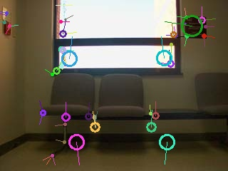
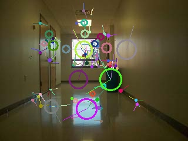
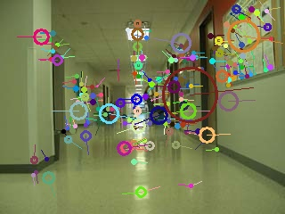
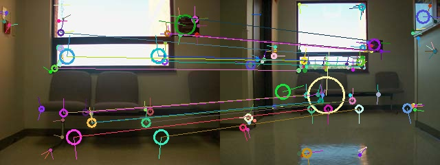
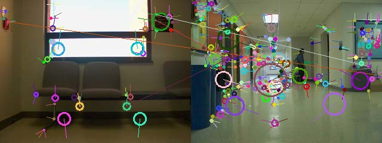

To chnage the directory used just edit the inputDir and outputDir in the python file. Be sure to have a "features" and "matches" folder in the output folder or images will not be save. It might also be a good idea to change the ThreadPool constructor to a different thread count depending on the number of CPU core (n + 1). Also keep not, for the perpose of getting examples some of the filenames are hardcoded on the findMatch function call, this should be changed as well.
The use of KNN matching instead of plan matching helped to limit the number of matches to the top candidates and then using the Lowe's Ratio Test with a ratio of .75 narrowed down the false possitives further. The choice of .75 was a result of trial and error, anything lower did not match some clear keypoints and and anything higher matched points that did not make sense.
| Features |  |  |  | |
|---|---|---|---|---|
| Matches (Good vs Bad) |  |  | ||
| Match Matix Images (Gradient and Min Max) Matrix Print Out |
||||